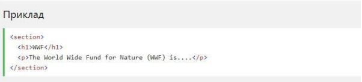
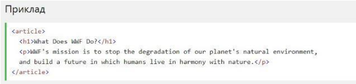

HTML5 Семантичні елементи
Семантичнийелемент чітко описує його значення як для браузера, так і
для розробника.
Приклади не семантичних елементів: div і span - нічого не говорить
про його вміст.
Приклади семантичних елементів: form, table і article - чітко
визначає його зміст.
HTML5 section елемент
Елемент section визначає розділ в документі.
Згідно з документацією w3c HTML5: "розділ представляє собою
тематичну угруповання контенту, зазвичай з заголовком".
Домашня сторінка зазвичай може бути розділена на розділи для
ознайомлення, змісту і контактної інформації.

HTML5 article елемент
Елемент article визначає незалежний, автономний вміст.
Стаття повинна мати сенс самостійно, і вона повинна мати можливість
читати його незалежно від іншої частини веб-сайту.
Приклади того, де можна використовувати елемент article:
- Повідомлення на форумі
- Блозі
- Газетна стаття
